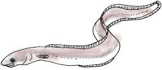

La Soupe d'Andgulle

Eune èrchette du bas d'St. Jean
- deux livres d'andgulle
- eune caboche
- trais onches dé beurre
- eune pînte dé vèrts pais
- eune tchul'lée à dêssèrt dé sé
- du paîvre
- les flieurs dé 8 souciques
- un pouothé
- eune quarte d'lait
- eune tchul'lée à soupe dé flieu
- deux tchul'lées à thée dé pèrsi mînchi
- d'l'ieau.
Couvri l'paîsson d'ieau et l'bouoilli pouor eune heuthe et d'mie (mettez l'sé auprès eune heuthe) ; halez l'paîsson et mettez les lédgeunmes prépathées et copées dans l'litchide pouor eune démi'heuthe.
Ajouôtez l'pèrsi, l'beurre et la soucique et, pouor l'êpaîssi, d'la flieu dêmêlée dans d'l'ieau ; pis r'bouoilli 4 minnutes. Mettez l'lait la dèrnié chose et un p'tit d'sé et d'paîvre s'i' faut. Faites tout bouoilli et sèrvez la soupe toute caude.
Lé paîsson peut être gardé caud et mangi auprès ou bein mîns d'côté pouor lé lendemain.
Viyiz étout: